用循环语言模型扩展潜在推理：Ouro
Scaling Latent Reasoning via Looped Language Models
阅读状态、进度与收藏只保存在你的浏览器里。本页按 arXiv 第 6 版（2026-10-11）精读；v6 只有 PDF，各节末尾的“英文原文”链接指向内容结构相同的 v5 HTML 版。
逐节精读
这部分按论文的章节顺序，用本站自己的话把整篇论文从头讲一遍。读懂某个概念需要的背景知识，会在第一次用到它之前单独讲清楚（青色框）。每个结论都尽量说出“因为什么、所以什么”。标“推算”的数字是本站根据论文、官方配置文件或其他论文的数据算出来的，不是论文原话。论文以 CC BY-SA 4.0 发布，所以文中直接放了原文图，并说明每张图怎么看；原图没画到的地方用本站示意图补上。
0 导读：这篇论文解决什么问题
今天的大模型想“多想一会儿”，主要靠思维链（chain-of-thought，CoT）：把推理过程一个 token 一个 token 地写出来。这种能力大多是在训练后期（监督微调、强化学习）才教会的，而且每多想一步就要多生成一段文字，上下文越来越长，推理也越来越慢。另一条思路是让模型在“肚子里”多算几遍：把同一组 Transformer 层反复使用，每多用一遍，每个 token 的内部表示就被再加工一次，而输出的文字长度不变。这类模型叫循环语言模型（looped language model，论文简称 LoopLM），也叫递归深度模型。
Ouro 是字节跳动 Seed 联合 UC Santa Cruz、Mila 等机构把这条思路推到正式预训练规模的一次尝试。他们训练了 1.4B 和 2.6B 两个模型，各自是一组 24 层或 48 层、整组循环 4 遍；在 7.7T（7.7 万亿）个 token 上从头预训练；再加一个“退出门”，让模型学会每个 token 用几遍就够。论文发布了基座模型和经过推理监督微调的 Thinking 模型。主要结论是：1.4B 的成绩接近 4B 的标准 Transformer，2.6B 接近 8B，作者称之为 2–3 倍的参数效率；用受控的小实验进一步说明，循环并没有让模型“存下更多知识”（循环与否都是每个参数约 2 bit），而是让模型“更会使用和组合已有知识”。
这一页还会反复做一件事：算账。一个循环 4 遍的 1.4B 模型，每生成一个 token 的计算量约等于一个 5B 左右的稠密模型（推算），KV 缓存是同参数稠密模型的 4 倍；它的“基座”训练数据后段混入了大量指令微调风格的数据；后来的几篇受控研究（Iso-Depth、Parcae、SMELT、Closing the Loop）在把参数、计算量和数据对齐之后，给出的“循环到底值多少”比论文的标题要温和得多。把这些账算清楚，才能知道“1.4B 打平 4B”这句话到底说明了什么。
读完这部分，你应该能回答这几个问题：
- 循环语言模型和普通 Transformer 差在哪里？参数量、每个 token 的计算量、KV 缓存各变成多少？
- 退出门怎样把“每一步停下的概率”变成一个退出分布？推理时又怎样决定停在哪一步？
- 训练目标为什么要加熵正则、为什么用均匀先验？第二阶段只训练退出门，是在修什么问题？
- 7.7T token 是怎样分阶段喂进去的？所谓“基座模型”里有多少监督微调风格的数据？
- “1.4B 打平 4B”在什么意义上成立？换成同计算量、同数据的比较会怎样？
- “知识容量”和“知识操作”分别指什么？“每个参数约 2 bit”是怎么测出来的？
- 循环次数超过训练时的 4 次以后会怎样？安全性和“忠实性”的结论应该怎么读？
1 引言：参数不变，能不能把计算做深
一个普通（稠密）Transformer 处理一个 token 时，几乎每个参数都要参与一次乘法和一次加法，所以前向计算量大约是 \(2N\) 次浮点运算（FLOPs），其中 \(N\) 是这个 token 实际经过的参数个数；训练时还要反向传播，大约是 \(6N\)。这条经验规则把“模型有多少参数”和“每个 token 要算多少”绑在了一起：想让每个 token 多算一点，就得多放参数。
循环模型把这两本账拆开了。同一组 \(N\) 个参数被用 \(R\) 遍，模型文件里仍然只有 \(N\) 个参数，但每个 token 的计算量变成了约 \(2RN\)。所以只要谈循环模型“比多大的稠密模型强”，就必须先说清楚：比的是同参数量（循环模型多算了 \(R\) 倍）还是同计算量（稠密对手多存了参数）。这一页后面会一直区分这两种比较。
论文认为，前两条路都碰到了天花板。第一条路是不管模型多大都多喂数据，但高质量数据越来越稀缺。第二条路是在推理时花更多计算，也就是写更长的思维链：模型在难题上多生成一些中间步骤，用输出长度换准确率。作者对这条路的批评有两点：推理能力主要是在后训练阶段才建立的，没有充分利用预训练数据；而且它是靠把输出序列拉长来加计算，会挤占上下文、拖慢推理。
第三条路就是 LoopLM：把一组共享权重的层在一次前向传播里反复调用。论文列出它的三个好处。第一，可以学一个提前退出的机制，简单的输入少循环几遍，难的输入多循环几遍，计算深度因此和参数量脱钩。第二，它在“深度”方向而不是“序列长度”方向加计算，不会撑长上下文。第三，在同样的训练数据下，每个参数能发挥更多作用，可以胜过更大的标准 Transformer。
此前已有不少循环模型的研究：从 2018 年的 Universal Transformer，到证明循环 Transformer 能模拟计算机程序的理论工作（Looped Transformers as Programmable Computers），再到把循环和“潜在思考”联系起来的 Reasoning with Latent Thoughts，以及在 8000 亿 token 上训练的 3.5B 递归深度模型 Huginn。但这些工作要么规模小，要么训练量远小于当时的主流基座模型。所以论文要问的是：放到数万亿 token 的训练规模上，LoopLM 在能力、效率和安全上的扩展表现，是否比不循环的 Transformer 更好？围绕这个问题，作者又追问了两个机制问题：
- 反复使用同一组权重，能不能得到“加深网络、每层用不同权重”通常带来的那种能力提升？
- 收益是否随循环次数单调增长？哪些因素决定它？
论文给出的四条贡献是：
- 大规模下的参数效率：在 7.7T token 上预训练的 1.4B 和 2.6B LoopLM，在多数基准上追平 4B 和 8B 的标准 Transformer，作者称为 2–3 倍的参数效率。
- 带熵正则的自适应计算：自适应退出的模型容易要么退化成永远很浅、要么永远跑满。作者用“均匀先验 + 熵正则”保证训练时各个深度都被探索，再用一个只训练退出门的第二阶段调整计算量和效果的平衡。
- 机制理解：用“语言模型物理学”（Physics of Language Models）风格的受控实验发现，循环不增加知识的存储量（循环与否都是每个参数约 2 bit），但明显增强了组合事实、多跳推理这类“操作知识”的能力。
- 安全性与忠实性：在 HEx-PHI 安全测试上，有害性随循环步数增加而下降，包括超出训练步数的“外推”步；和显式思维链相比，循环的中间状态与最终输出更一致，作者认为更“因果忠实”，而不是事后找理由。
论文据此把“循环深度”称为模型大小和数据量之外的第三个扩展维度，并公开了 Ouro 系列模型。
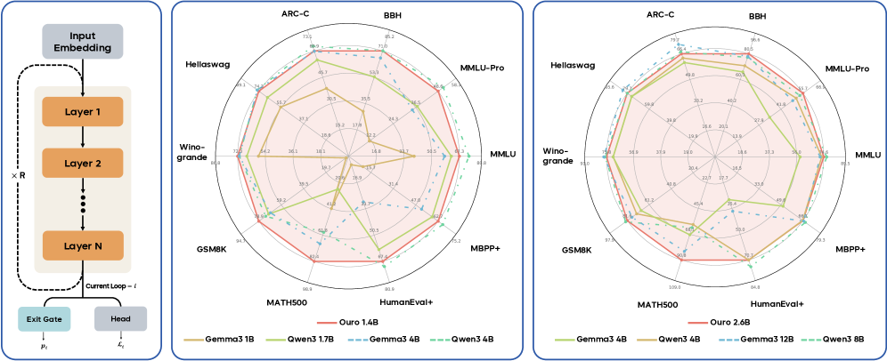
2 相关工作：看待“循环”的两种角度
近几年有一批工作重新捡起了循环结构。Geiping 等人的 Huginn 用“递归深度”在潜空间里扩展测试时计算；Saunshi 等人（Reasoning with Latent Thoughts）证明循环 Transformer 在推理任务上能追上深得多的不循环模型，并把循环和“潜在思维”在形式上联系起来；Relaxed Recursive Transformers 把现成的模型改造成共享的基础块，每一遍再加一个不同的 LoRA 适配器；还有“在连续空间里沉思”（pondering）、“内部思考”（inner thinking）这类说法；Mixture-of-Recursions 则让每个 token 由路由器决定循环几遍。
论文认为，从 Universal Transformer 到这些新工作，可以用两种互补的角度来理解：
角度一：参数共享，为了效率。这种看法把循环模型当作一个“所有层权重都绑在一起”的深 Transformer。典型代表是 ALBERT：它把各层参数共享，再把词嵌入矩阵分解，大幅减少参数总量。在大模型流行之前，机器翻译领域就系统研究过各种层共享的方式，在压缩率和准确率之间找平衡。模型越做越大以后，人们一度不再关心参数复用，但为了把大模型塞进有限的显存，这个方向又回来了，比如 Megrez2 在混合专家（MoE）模型里跨层复用专家。在这种看法下，共享参数是为了省存储，计算量本身并不减少。
角度二：潜在推理，迭代精炼。这种看法把每一遍循环当作一步不用说出来的“思考”，每一步都把模型内部的表示再修正一点。实验上，增加循环次数确实能提高复杂推理任务的成绩。有些模型把这个过程做成显式的：Coconut 把上一步最后一层的隐藏状态当作一个“连续思维 token”重新喂回输入，CoTFormer 把激活交织回输入序列后再过共享层。这两种做法都会让序列变长。Ouro 属于另一类“隐式”的做法：整个思考过程都发生在隐藏状态从一遍到下一遍的演化里，序列长度不变。
3 方法：LoopLM，以及让模型自己决定循环几遍
3.1 架构：同一组层跑好几遍
语言模型先用嵌入层把每个 token 变成一个 \(d\) 维向量（Ouro 中 \(d=2048\)）。之后的每一层 Transformer（注意力加前馈网络）都读入一串向量、输出一串形状完全相同的向量，这串向量叫隐藏状态。最后，语言模型头（lmhead，一个从 \(d\) 维映射到词表大小的线性层，再接 softmax）把最后一层的隐藏状态变成“下一个 token 是什么”的概率。正因为每层的输入和输出形状一样，才能把最后一层的输出原样送回第一层再算一遍，这就是循环能成立的前提。
记普通（不循环）的语言模型为：先嵌入，再依次经过 \(L\) 层，最后接语言模型头。用 \(\mathcal{M}^{L}\) 表示这一整组 \(L\) 层，\(\circ\) 表示函数复合：
循环模型把同一组 \(\mathcal{M}^{L}\) 连续用 \(t\) 次，\(t\) 叫循环步数（也叫递归深度），最多 \(T_{\max}\) 次：
\(t=1\) 时它就是普通模型。关键的设计在于：每一遍结束时都接一次语言模型头，所以每一步都给出一个完整的“下一个 token”预测。对一段长 \(M\) 的文本，第 \(t\) 步在第 \(i\) 个位置上的损失，就是它给真实下一个 token 的负对数概率：
这里 \(p^{(t)}_{\theta}\) 是把第 \(t\) 步、第 \(i\) 个位置的隐藏状态 \(h^{(t)}_{i}\) 送进语言模型头得到的分布。因为第 1、2、3 步的输出在训练中也受到监督，它们都是“能用的”预测，这正是后面能提前退出的基础。已有工作表明循环步数越多推理越好，但多一步就多一份计算，而很多 token（比如一个固定搭配的后半个词）根本不需要多想。所以需要一个机制，把计算花在需要的 token 上。
- 归一化。论文说每层“在注意力和前馈网络之前各放一个 RMSNorm”，并称之为三明治归一化。官方代码里每层其实有四个 RMSNorm：注意力之前、注意力之后（加回残差之前）、前馈之前、前馈之后，这才是通常所说的三明治结构。它的作用是把每个子层的输出幅度压住，避免同一组权重反复作用时数值越滚越大。
- 两遍之间。每一遍结束时，代码先对隐藏状态做一次最终的 RMSNorm，再把归一化后的结果直接送进下一遍；退出门和语言模型头读的也是这个归一化后的状态。输入嵌入只在第一遍送入，后面几遍不再重新注入输入（这一点和每一步都重新注入输入的 Huginn 不同）。
- KV 缓存。代码为“每一遍的每一层”各开一个 KV 槽位，1.4B 模型共 24 × 4 = 96 个。
- 推理时的“提前退出”。代码总是把 4 遍全部算完，所谓按阈值退出，只是在算完之后挑出读哪一遍的隐藏状态；配置文件里默认阈值是 1.0，等于总是读第 4 遍。项目主页也说明，vLLM 中的 Ouro 实现总是跑满 4 遍，不做自适应退出。所以公开的推理代码并不会因为提前退出而省计算。
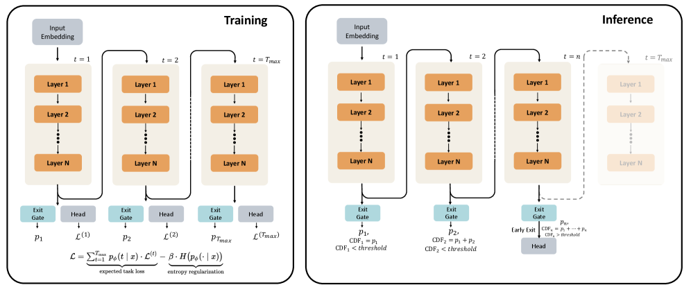
3.2 退出门：每一遍都给出“现在停下”的概率
让网络自己决定算几步，最早的系统性方案是 Graves 在 2016 年提出的自适应计算时间（ACT），后来 PonderNet 把它写成了概率模型。基本想法可以用闯关来比喻：每过一关，系统掷一枚“停不停”的硬币，第 \(t\) 关停下的概率是 \(\lambda_{t}\)。那么“恰好在第 \(t\) 关停下”的概率，等于“前 \(t-1\) 关都没停”的概率乘以 \(\lambda_{t}\)。前 \(t-1\) 关都没停的概率叫生存概率，是每一关“不停”的概率连乘。这样得到的一组数，就是一个关于“在哪一关停下”的概率分布。
Ouro 在每一遍（第 \(t\) 遍，\(t\le T_{\max}\)）结束时，和语言模型头并排放一个退出门。它读入这一遍最后的隐藏状态 \(h^{(t)}\)，经过一个线性层和 sigmoid，输出“这一步停下”的瞬时概率：
然后按上面的闯关逻辑，定义生存概率和“恰好在第 \(t\) 步退出”的概率；为了让分布加起来等于 1，最后一步拿走剩下的全部概率：
推理时，论文沿用 PALBERT 提出的 Q-exit 规则：把退出概率从第 1 步起累加成累积分布（CDF），选一个阈值 \(q\in[0,1]\)，在 CDF 第一次达到 \(q\) 的那一步停下：
阈值 \(q\) 是部署时可以随手调的旋钮：\(q\) 越小，越早停、越省计算；\(q\) 越大，越倾向于算满。这个规则是确定性的，不需要随机采样。要注意，退出门是按位置工作的：第 \(i\) 个位置的门只看到前缀 \(x_{1:i}\) 经过 \(t\) 遍之后的状态，和预测 \(x_{i+1}\) 用的是同一份信息。
走一遍例子。设 \(T_{\max}=4\)，某个 token 在前三遍的门输出是 \(\lambda_{1}=0.1,\ \lambda_{2}=0.3,\ \lambda_{3}=0.5\)（第 4 遍的门值用不上，因为最后一步拿走剩余概率）：
- 第 1 步退出：\(p(1)=\lambda_{1}=0.10\)；生存 \(S_{1}=0.9\)。
- 第 2 步退出：\(p(2)=\lambda_{2}S_{1}=0.3\times0.9=0.27\)；生存 \(S_{2}=0.9\times0.7=0.63\)。
- 第 3 步退出：\(p(3)=\lambda_{3}S_{2}=0.5\times0.63=0.315\)；生存 \(S_{3}=0.315\)。
- 第 4 步退出：\(p(4)=S_{3}=0.315\)。四个数加起来正好是 1。
累积分布依次是 0.10、0.37、0.685、1。若阈值 \(q=0.5\)，第 2 步时 CDF 只有 0.37，继续；第 3 步达到 0.685，于是在第 3 步停下。若 \(q=0.3\)，第 2 步就停；若 \(q=0.9\)，要算满 4 步。再看一个“简单”的 token：如果它第 1 遍的门就输出 \(\lambda_{1}=0.8\)，那么 \(q=0.5\) 时它在第 1 步就退出，只花四分之一的计算。
门的参数 \(\phi\)（以及由它决定的整个退出分布）分两个阶段学：第一阶段在预训练中和语言模型一起学，优化一个带熵正则的目标；第二阶段冻结语言模型，只微调门，让退出分布更“尖”，也就是更明确地按难度分配深度，而不改变任何 token 的预测。
3.3 第一阶段：带熵正则的训练目标
一个离散分布 \(p\) 的熵 \(H(p)=-\sum_{t}p_{t}\log p_{t}\) 衡量它有多“分散”。在 4 个选项上，均匀分布 \((0.25,0.25,0.25,0.25)\) 的熵最大，等于 \(\ln4\approx1.386\)；全部概率压在一个选项上时熵为 0。KL 散度 \(\mathrm{KL}(p\,\|\,\pi)=\sum_{t}p_{t}\log(p_{t}/\pi_{t})\) 衡量 \(p\) 离一个参考分布（“先验”）\(\pi\) 有多远。如果 \(\pi\) 是均匀分布，代进去可以算出 \(\mathrm{KL}(p\,\|\,\pi)=\log T_{\max}-H(p)\)：离均匀分布越远，就等于熵越小。所以“惩罚偏离均匀先验”和“奖励熵大”是同一件事。
不加正则会发生什么。如果只最小化“按退出概率加权的各步损失”，会出现一个自我强化的坍缩。更深的循环通常让损失更低（至少在一定深度内），于是梯度会把退出概率往后面的步推；概率越集中在后面的步，这些步在加权损失里的权重越大，得到的训练信号越多，损失降得更快，又把更多概率吸过去。最后整个分布塌到 \(t=T_{\max}\) 上：模型永远算满，前面几步的输出也因为几乎没有权重而得不到训练，提前退出就没法用了。
论文的目标函数。在每个预测位置上，把“期望任务损失”和“退出分布的熵”放在一起：
第一项按退出概率对各步的损失加权平均；第二项奖励退出分布保持分散，防止坍缩。系数 \(\beta\) 控制探索与利用的平衡：\(\beta\) 大，分布更分散，各个深度都被训练到；\(\beta\) 小，模型在确信某个深度最好时可以把大部分概率压上去。Ouro 在第一段预训练用 \(\beta=0.1\)，之后降到 0.05（§4.3）。v6 版特别说明：这里的门是逐位置的，每个位置的门只给自己那一个预测加权；任务项是“各步损失按退出分布的平均”，不是把各步预测分布先混合再取对数似然。
用例子算一遍。沿用上一小节的退出分布 \(p=(0.10,0.27,0.315,0.315)\)，假设这个位置在四步上的损失分别是 \(\ell=(3.0,\,1.2,\,0.8,\,0.7)\)（单位 nat）。期望任务损失是 \(0.1\times3.0+0.27\times1.2+0.315\times0.8+0.315\times0.7=1.097\)；这个分布的熵约为 1.31；取 \(\beta=0.05\)，总目标约为 \(1.097-0.05\times1.31=1.031\)。如果分布完全塌到第 4 步，期望损失是 0.70、熵是 0，总目标 0.70，反而更小。可见熵项只是把分布“拉散一点”，并不能阻止它偏向深处。
把这个目标在固定损失下对 \(p\) 求最优，可以得到一个很直观的结论（本站推导，属于标准的变分结果）：最优退出分布是各步损失的 softmax，温度就是 \(\beta\)：
| 情形（各步损失，nat） | \(\beta\) | 第 1 步 | 第 2 步 | 第 3 步 | 第 4 步 |
|---|---|---|---|---|---|
| 难 token：3.0 / 1.2 / 0.8 / 0.7 | 0.05 | ≈0 | 0.00004 | 0.12 | 0.88 |
| 难 token：同上 | 0.1 | ≈0 | 0.005 | 0.27 | 0.73 |
| 第 2 步后就不再进步：1.0 / 0.70 / 0.69 / 0.69 | 0.05 | 0.0007 | 0.29 | 0.355 | 0.355 |
推算：按 \(p^{*}_{t}\propto\exp(-\ell^{(t)}/\beta)\) 计算，损失数字是为说明而设的示意值。
这张表说明了两件事。第一，\(\beta=0.05\) 意味着损失相差 0.05 nat 量级就足以显著改变退出概率，所以第 1 步（损失远高于后面）几乎拿不到任何概率；论文附录图 19 在 MMLU 上统计的平均退出权重是 0.0004、0.0855、0.3793、0.5348，和这个规律吻合。第二，对“第 2 步之后就不再进步”的 token，第一阶段的最优分布把概率几乎平均摊在第 2、3、4 步上，并不偏向“够用就停”。原因是均匀先验不惩罚计算：多算一步不花代价，只要损失不变，模型就无所谓停在哪一步。所以第一阶段学出的分布只是“哪些深度的结果差不多好”，还不是一个省计算的停止规则，这就是需要第二阶段的原因。
另一种看法：带均匀先验的变分推断。把“在第几步退出”看成每个预测位置上的一个隐变量 \(z_{i}\in\{1,\dots,T_{\max}\}\)，退出分布 \(p_{\phi}\) 是它的变分分布，\(\pi\) 是先验。对应的 \(\beta\) 加权变分目标是“期望任务损失 + \(\beta\cdot\mathrm{KL}(p_{\phi}\,\|\,\pi)\)”。先验取均匀分布时，KL 等于 \(\log T_{\max}-H(p_{\phi})\)，所以这个目标和上式只差一个与参数无关的常数 \(\beta\log T_{\max}\)；\(\beta=1\) 时就是通常的负 ELBO。这把 Ouro 的目标和 PonderNet 这类变分自适应计算方法联系了起来。
为什么用均匀先验。不同的先验表达不同的深度偏好：PonderNet 用几何先验，Huginn 用泊松—对数正态先验，它们都温和地偏向早停；均匀先验对深度没有偏好。作者的理由是，把“按输入难度决定何时退出”和“全局上想省多少计算”这两件事分开：先验不偏，熵项只负责防止塌到 \(T_{\max}\)，省计算交给阈值 \(q\) 和第二阶段。
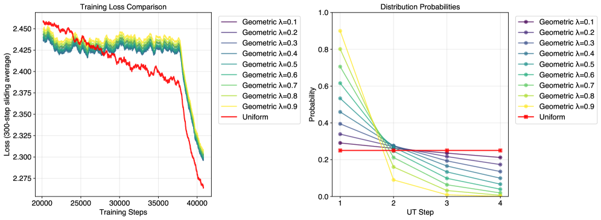
3.4 第二阶段：冻结语言模型，只训练退出门
第二阶段冻结语言模型的全部参数，只训练门，让它学会“根据实际收益决定停不停”。作者用的是一个贪心的信号：多循环一步带来的损失下降，值不值这一步的计算。具体做法是，对每个位置 \(i\) 计算各步的损失（用 stop-gradient 截断，保证不影响语言模型），定义从第 \(t-1\) 步到第 \(t\) 步的改进量：
改进量大说明还在进步，小说明收益停滞、应该退出。把它变成一个“理想的继续概率”标签，接近 1 表示该继续，接近 0 表示该退出：
然后用二元交叉熵，让门预测的“继续概率” \(1-\lambda_{i}^{(t)}\) 去拟合这个标签，在序列上取平均，再对 \(t=2,\dots,T_{\max}\) 求和、除以 \(T_{\max}\)：
这个损失同时惩罚两种错误：“想得太少”（标签说该继续，门却给出很大的退出概率）和“想得太多”（标签说该停，门却还想继续）。
用例子算一遍。继续用上面两个 token。难 token 的损失是 3.0 / 1.2 / 0.8 / 0.7，三次改进量分别是 1.8、0.4、0.1 nat，对应标签都接近 1（最小的一个是 \(\sigma(50\times0.095)\approx0.99\)），门被训练成一路继续。“第 2 步后不再进步”的 token 损失是 1.0 / 0.70 / 0.69 / 0.69：第 2 步改进 0.30，标签约等于 1，继续；第 3 步只改进 0.01，标签 \(\sigma(0.25)\approx0.56\)，也就是退出目标约 0.44；第 4 步改进为 0，标签约 0.44。于是这个 token 在第 3 步的累积退出概率大约是 0.44：阈值 \(q=0.5\) 时它仍会算到第 4 步，阈值降到 0.4 才会在第 3 步停。
这个例子暴露了第二阶段的两个结构性特点（本站分析）。第一，标签用的是已经发生的改进：第 \(t\) 步的门只有在第 \(t\) 步已经被证明没用之后，才会被教“该停了”。所以对上面这个 token，它最早也只能在第 3 步停，而真正理想的停止点是第 2 步；贪心信号默认“这一步没进步，下一步也不会进步”。第二，由于 \(\gamma\) 很小、改进量被截断在 0，单步的退出目标最多只有约 0.56，退出概率要靠连续几步的停滞累积起来，阈值 \(q\) 的取值因此对实际退出深度影响很大。
- 退出门只是一个 2048→1 的线性层加 sigmoid，相当于在隐藏状态上做一个线性探针；第二阶段冻结了语言模型，所以它不会改变任何 token 的预测，只改变“读哪一步”。
- 论文没有交代第二阶段用了什么数据、训练多少步，也没有说明公开的四个权重里装的是哪一种门。
- “简单 token 早退出、难 token 多循环”是设计目标。真正生成文字时，一个 token 早退出会让它缺少后面几步的 KV，后续 token 在深层就没东西可看（§5.5、“后来怎么样了”会讲到这个问题）。论文的提前退出实验（§5.4）是在 MMLU 这种只打分、不生成的设定下做的。
4 训练：7.7T token 怎样分阶段喂进去
现在的大模型预训练很少从头到尾用同一份数据、同一个学习率。常见做法叫 WSD（warmup–stable–decay）学习率：先用很短时间把学习率升上去（warmup），然后在一个常数学习率下训练很长时间（stable），最后把学习率降下来（decay，也叫退火，annealing）。经验上，在学习率下降的阶段换上质量更高的数据（精选网页、数学、代码），收益会被放大。退火之后，很多团队还会加一段“中期训练”（mid-training）：用更高质量、常常带问答格式的数据继续训，为后面的指令微调铺路。另一个术语是 upcycling：用一个训练到一半的小模型的权重去初始化一个更大的模型，省掉大模型从头训练的那一段。
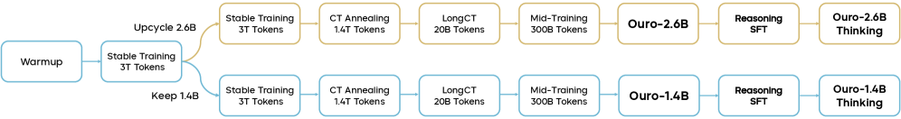
| 阶段 1a 预训练 I | 阶段 1b 预训练 II | 阶段 2 退火（CT Annealing） | 阶段 3 长上下文（LongCT） | 阶段 4 中期训练 | |
|---|---|---|---|---|---|
| 训练 token | 3T | 3T | 1.4T | 20B | 300B |
| 循环步数 | 8 | 4 | 4 | 4 | 4 |
| 熵正则系数 \(\beta\) | 0.1 | 0.05 | 0.05 | 0.05 | 0.05 |
| 学习率（末值）与调度 | 3e-4，常数 | 3e-4，常数 | 3e-5，余弦下降 | 3e-5，常数 | 1e-5，余弦下降 |
| 序列长度 | 4K | 4K | 16K | 64K | 32K |
| RoPE 基数 | 10K | 10K | 40K | 1M | 1M |
| 批大小（token） | 4M → 8M | 8M | 8M | 8M | 8M |
| 数据侧重 | 网页为主 | 网页为主 | 数学、代码多；少量 SFT 风格 | 长文档 | SFT 风格数据为主 |
数字来自原文表 1。各阶段共用 AdamW（\(\beta_{1}=0.9,\beta_{2}=0.95\)）、权重衰减 0.1、梯度裁剪 1.0。
4.1 模型结构
Ouro 用的是标准的仅解码器 Transformer，作者有意不加花样，只把循环机制实现干净：多头注意力（MHA）配旋转位置编码（RoPE，见 RoFormer 精读），前馈网络用 SwiGLU 激活，再加上为深层循环稳定性准备的三明治归一化。两个模型都用 SmolLM2 的 49,152 词表分词器，它针对代码和拉丁字母语言优化。1.4B 是 24 层，2.6B 是 48 层，隐藏维度都是 2048（原文表 2）。
按官方配置文件把参数拆开算一遍（推算）：每层注意力的四个投影矩阵是 \(4\times2048^{2}\approx16.8\)M，SwiGLU 前馈的三个矩阵是 \(3\times2048\times5632\approx34.6\)M，合计每层约 51.4M；24 层共约 1.233B。输入嵌入和输出层不共享，各约 100.7M。总数约 1.434B，与“1.4B”吻合。2.6B 的 48 层共约 2.466B，加上嵌入和输出层约 2.668B。另外要留意，Ouro 的注意力是 16 个查询头配 16 个 KV 头的标准多头注意力，没有用今天常见的分组查询注意力（GQA）来压缩 KV，所以它每一遍、每个 token 的 KV 缓存本来就比同代模型大。
4.2 数据：四个阶段，后两段很像指令微调
为了可复现，作者只用开源数据。四个阶段的数据按 WSD 学习率的节奏来设计。
阶段 1：预训练（预热和常数学习率阶段）。这一段以网页抓取数据为主。因为要训超过 2T token，很多常用开源语料太小（FineWeb-Edu 约 1.3T，DCLM 约 2.6T），所以主力是 6.3T 的 Nemotron-CC。为了让模型有基本的中文能力，加入了 Ultra-FineWeb-zh 和 MAP-CC；但分词器里没有中文词表，汉字会被拆成好几个字节级的子 token，所以从阶段 2 起就把中文去掉了。为了加强代码和数学，加入了 OpenCoder 和 MegaMath。阶段 1 共 6T token，配比是 Nemotron-CC 73.4%、MAP-CC 13.0%、Ultra-FineWeb-zh 2.0%、OpenCoder-pretrain 7.5%、MegaMath-web 4.1%（原文表 4）。
阶段 2：退火。学习率下降，同时换上更高质量的数据，序列长度扩到 16K，比大多数样本都长，以减少截断。1.4T token 的配比是：Nemotron-CC 高质量子集 66.5%、Nemotron-CC-Math-v1 15.0%、MegaMath 高质量子集 4.6%、OpenCoder 退火语料 0.5%、Nemotron 合成代码 3.8%，以及 Nemotron-SFT-Code 3.4% 和 Nemotron-SFT-General 6.2%（原文表 5）。后两项是英伟达为 Nemotron 预训练准备的“SFT 风格”数据，也就是问题加回答格式的样本。
阶段 3：长上下文。用 ProLong 数据集中长度 64K 的子集，共 20B token，训练模型处理长序列。
阶段 4：中期训练。整合 20 多个开源 SFT 数据集，样本既有“问题—答案”，也有“问题—思维链—答案”，全部转成 ChatML 对话格式，作者称做了彻底的去污染（避免与主流评测重合）。处理后有 182B token，从中随机抽 90B；为了稳定分布，再回放阶段 1 的 30B 和阶段 2 的 180B，合计 300B。
原文表 3 列出了每个数据源的规模和实际用到的 token 数（因为预训练是随机采样，数据集大小不等于看过的 token 数）：Nemotron-CC 用了 4404B、MAP-CC 780B、Ultra-FineWeb-zh 120B、OpenCoder-pretrain 450B、MegaMath-web 246B（这五项加起来正好是阶段 1 的 6T）；MegaMath 高质量 64B、Nemotron-CC-Math-v1 210B、Nemotron-Code 53B、Nemotron-SFT-Code 48B、Nemotron-SFT-General 87B、OpenCoder 退火 7B；ProLong-64K 20B；中期训练 SFT 混合 182B 中用了 90B。
4.3 训练稳定性：从 8 遍退回 4 遍
预训练用的是 flame 框架（基于 torchtitan）。作者明确说，他们把稳定性放在激进扩展之前，并根据训练动态做了几处调整。
- 循环次数从 8 降到 4。阶段 1a 一开始每个 token 循环 8 遍，结果出现了损失尖峰和梯度振荡。作者推测原因是梯度要穿过很多次循环，小扰动会被层层放大；于是阶段 1b 起改为 4 遍，在计算深度和稳定性之间取平衡。
- 批大小逐步加大。从每批 4M token 增加到 8M。批越大，梯度估计越稳，这对梯度要穿过多次迭代、方差更大的循环结构尤其重要。
- 降低熵正则系数。\(\beta\) 从阶段 1a 的 0.1 降到之后的 0.05。作者给的理由有两个：减少任务损失和 KL 惩罚之间相互打架的梯度，让优化更稳；同时减弱均匀先验的“拉力”，给模型更多自由去找有用的深度分配。
- 保守的学习率。作者经验上发现循环结构需要比同参数 Transformer 更小的学习率；受算力限制没有做详细的学习率扫描，而是用了偏保守的值。
- 序列长度逐步加长。两段预训练 4K，退火 16K，长上下文 64K，中期训练 32K。
两个尺寸怎么来的。阶段 1b 开始时分成两路：1.4B 继续用原来的 24 层；2.6B 把这 24 层逐层复制成 48 层（upcycling），同样循环 4 遍。作者认为，由于循环模型本来就在反复使用同一组权重，复制层数这一步特别顺滑，没有出现标准 Transformer upcycling 常见的不稳定。这也意味着 2.6B 不是从头训的：它前 3T token 的训练是和 1.4B 共享的。
4.4 监督微调，以及没有成功的强化学习
监督微调（SFT）就是用“问题—标准答案（常常包括完整的思维链）”样本，按下一个 token 预测继续训练，让模型学会某种回答格式和推理风格。带可验证奖励的强化学习（RLVR）则让模型自己生成很多回答（称为 rollout），用能自动判对错的奖励（比如数学答案是否正确）给好的回答加分、差的减分；GRPO 和 DAPO 是两种常用算法。为了跑得快，rollout 一般交给 vLLM、SGLang 这类推理引擎生成；如果生成 rollout 的模型和被更新的模型行为不一致，就叫 off-policy，会带来偏差。
Thinking 模型的监督微调。作者在约 830 万条样本上做 SFT（原文表 6）：数学 350 万条（OpenThoughts3、AceReason-1.1-SFT），代码 320 万条（AceReason-1.1-SFT、OpenCodeReasoning、Llama-Nemotron-Post-Training-Dataset、OpenThoughts3），科学 80.8 万条（OpenThoughts3、Llama-Nemotron），对话 76.7 万条（OO1-Chat-747K、DeepWriting-20K）。训练 2 个 epoch，最长 32K token，用 LlamaFactory，Adam 学习率 \(2\times10^{-5}\)，余弦下降。论文脚注还提到训练中途因基础设施问题中断过一次，从最近的检查点以接近原调度的学习率续训。
强化学习的尝试。SFT 之后，作者在 DAPO-17K 数据上试了 DAPO 和 GRPO，但都没有明显超过 SFT 的检查点。主要障碍是动态的提前退出：vLLM / SGLang 能快速生成 rollout，前提是每个 token 走固定的计算路径，而 LoopLM 每个 token 的深度不固定。他们试了两种办法，都没成功：
- 离策略 rollout。在 vLLM 里总是跑满 4 遍生成，每个 token 得到 4 份候选 logits，事后找出第一个超过退出阈值的那一步来“模拟”提前退出，更新时只用到那一步为止的损失。问题在于 token 是按第 4 步生成的，损失却按更早的一步计算，两者不一致，结果没有提升。
- 固定 4 遍的强化学习。为了避免离策略，rollout 和更新都固定用 4 遍。训练过程正常，但成绩没有超过 SFT 检查点。作者推测，小模型在大量 SFT 之后留给 RL 的提升空间有限。一个有意思的现象是：即使按 4 遍训练，模型在推理时仍会在合适时用更少的循环，机制不明。
作者表示，等能完整支持动态计算的基础设施成熟后会继续探索。后来的 RLTT（见“后来怎么样了”）给出了另一个解释：GRPO 只把奖励归到最后一步的潜在状态上，与循环模型的内部计算不匹配。
5 实验：Ouro 到底多强，强在哪里
基座模型没有学过对话，评测时一般用 few-shot：在题目前面放几道带答案的例题（“5-shot”就是 5 道），让模型照着格式答。评测方式分两类。一类是比概率（logprob）：MMLU、ARC-C、HellaSwag、Winogrande 这些选择题，不让模型生成，只比较它给每个选项的概率，概率最高的算它选的。另一类是生成后判分：GSM8K、MATH500、BBH、MMLU-Pro 要求模型先写出推理过程（CoT）再给答案，答案必须按规定格式出现才算对（strict match）；HumanEval、MBPP 让模型写代码并跑测试，pass@1 是“生成一次就通过”的比例。生成类评测对提示词、例题数、答案格式非常敏感，同一个模型在不同评测框架下相差十几分并不罕见。Ouro 的基座评测用 lm-eval-harness 和 evalplus（MATH500 用内部框架），所有模型走同一条流水线。
5.1 基座模型：1.4B / 2.6B 对 1B–12B 的稠密模型
论文拿 Ouro 和 Qwen2.5、Qwen3、Gemma3、Llama3.1、Llama3.2 的基座模型比，全部用同一条评测流水线重新测（不是抄各家报告里的数）。
| Ouro-1.4B 对 1–4B 模型 | Gemma3 1B | Llama3.2 1.2B | Qwen2.5 1.5B | Qwen3 1.7B | Qwen2.5 3B | Llama3.2 3B | Qwen3 4B | Gemma3 4B | Ouro 1.4B（4 遍） |
|---|---|---|---|---|---|---|---|---|---|
| 训练 token | 2T | 9T | 18T | 36T | 18T | 9T | 36T | 4T | 7.7T |
| MMLU | 39.85 | 45.46 | 60.99 | 62.46 | 65.62 | 59.69 | 73.19 | 58.37 | 67.35 |
| MMLU-Pro | 11.31 | 11.80 | 29.11 | 37.27 | 37.87 | 33.34 | 51.40 | 34.61 | 48.62 |
| BBH | 30.26 | 30.72 | 43.66 | 53.51 | 55.37 | 39.45 | 70.95 | 66.32 | 71.02 |
| ARC-C | 39.25 | 41.98 | 54.44 | 55.72 | 55.46 | 52.47 | 63.65 | 60.92 | 60.92 |
| HellaSwag | 56.12 | 59.35 | 67.73 | 67.09 | 74.54 | 73.09 | 75.66 | 75.58 | 74.29 |
| Winogrande | 58.72 | 62.75 | 66.77 | 66.30 | 70.17 | 69.14 | 71.19 | 71.07 | 72.30 |
| GSM8K | 2.05 | 7.05 | 60.73 | 70.28 | 74.60 | 67.20 | 72.86 | 68.69 | 78.92 |
| MATH500 | 41.00 | 7.40 | 17.60 | 25.80 | 42.60 | 40.80 | 59.60 | 68.60 | 82.40 |
| HumanEval | 6.70 | 19.50 | 52.40 | 66.50 | 68.90 | 29.90 | 77.40 | 34.80 | 74.40 |
| HumanEval+ | 5.50 | 17.40 | 46.30 | 59.80 | 62.20 | 26.20 | 70.70 | 29.30 | 67.40 |
| MBPP | 12.40 | 35.70 | 60.30 | 68.00 | 63.00 | 50.30 | 78.80 | 60.60 | 73.00 |
| MBPP+ | 10.10 | 29.10 | 50.00 | 58.50 | 54.20 | 39.70 | 65.90 | 51.10 | 62.70 |
数字来自原文表 7。
| Ouro-2.6B 对 3–12B 模型 | Qwen2.5 3B | Llama3.2 3B | Qwen3 4B | Gemma3 4B | Qwen2.5 7B | Llama3.1 8B | Qwen3 8B | Gemma3 12B | Ouro 2.6B（4 遍） |
|---|---|---|---|---|---|---|---|---|---|
| 训练 token | 18T | 9T | 36T | 4T | 18T | 15T | 36T | 12T | 7.7T |
| MMLU | 65.62 | 59.69 | 73.19 | 58.37 | 74.20 | 73.02 | 76.63 | 72.14 | 74.60 |
| MMLU-Pro | 37.87 | 33.34 | 51.40 | 34.61 | 43.55 | 43.24 | 53.72 | 49.21 | 55.73 |
| BBH | 55.37 | 39.45 | 71.14 | 66.32 | 53.72 | 71.56 | 77.65 | 78.41 | 80.46 |
| ARC-C | 55.46 | 52.47 | 63.65 | 60.75 | 63.65 | 60.75 | 66.10 | 72.44 | 66.40 |
| HellaSwag | 74.54 | 73.09 | 75.66 | 75.58 | 79.98 | 81.97 | 79.60 | 83.68 | 79.69 |
| Winogrande | 70.17 | 69.14 | 71.19 | 71.27 | 76.48 | 77.11 | 76.80 | 77.74 | 75.85 |
| GSM8K | 74.60 | 67.20 | 72.86 | 68.69 | 81.50 | 78.17 | 83.09 | 77.18 | 81.58 |
| MATH500 | 42.60 | 40.80 | 59.60 | 68.60 | 61.20 | 52.90 | 62.30 | 83.20 | 90.85 |
| HumanEval | 68.90 | 29.90 | 77.70 | 34.80 | 79.30 | 38.40 | 84.80 | 46.30 | 78.70 |
| HumanEval+ | 62.20 | 26.20 | 70.70 | 29.30 | 70.60 | 31.10 | 75.30 | 37.20 | 70.70 |
| MBPP | 63.00 | 50.30 | 78.80 | 60.60 | 73.80 | 62.40 | 79.00 | 73.50 | 80.40 |
| MBPP+ | 54.20 | 39.70 | 65.90 | 51.10 | 63.50 | 51.60 | 67.90 | 66.10 | 66.60 |
数字来自原文表 8。
论文的总结是三条。第一，循环 4 遍的 1.4B 在多数基准上和 4B 的 Qwen3-Base 相当，在 BBH（71.02 对 70.95）、GSM8K（78.92 对 72.86）、MATH500（82.40 对 59.60）这些推理题上持平或超过。第二，2.6B 在推理密集的基准上超过最大到 8B 的稠密模型：MMLU-Pro 55.73、BBH 80.46、MATH500 90.85，而 Qwen3-8B-Base 分别是 53.72、77.65、62.30。第三，优势最明显的是 MMLU-Pro、BBH、GSM8K 和 MATH500 这类需要多步推理和组合知识的任务，作者认为这支持了“迭代计算增强推理”的假设。
逐项数一下会看得更清楚（本站统计）：和 Qwen3-4B 比，Ouro-1.4B 在 12 项里赢 4 项（BBH、Winogrande、GSM8K、MATH500），输 8 项，MMLU 低近 6 分，代码题低 3–6 分；和参数量最接近的 Qwen3-1.7B 比，12 项全赢。和 Qwen3-8B 比，Ouro-2.6B 赢 6 项、输 6 项，输的集中在 MMLU、代码和 GSM8K。所以“1.4B 追平 4B、2.6B 追平 8B”是对推理类题目而言的；在偏知识的 MMLU、偏常识的 HellaSwag 上，参数更多的模型仍然领先，这和 §6 的“循环不增加知识容量”是吻合的。
- MATH500 的差距大得反常。1.4B 的基座模型拿到 82.40，比 Qwen3-4B-Base 高 22.8 分，比 Gemma3-12B 的 83.20 只差一点。MATH500 是 5-shot 思维链、严格匹配答案格式，而 Ouro 在阶段 2 和阶段 4 见过大量带思维链的数学问答（§4.2），对这种“写步骤再按格式给答案”的评测天然占便宜。这一项的优势有多少来自循环，单看这张表无法判断。
- 同一个基线在不同评测框架下差很多。例如 Qwen3-4B-Base 的 GSM8K 在这里是 72.86，而 Qwen3 技术报告用 4-shot 思维链测出的是 87.79。两边设置不同，不能直接互比，但它提醒我们：基座模型在生成类基准上的几分差距，很可能小于评测设置带来的波动。另外，同一个基线在表 7 和表 8 里也有几处数字不一致（如 Qwen3-4B 的 BBH 是 70.95 对 71.14，HumanEval 是 77.40 对 77.70）。
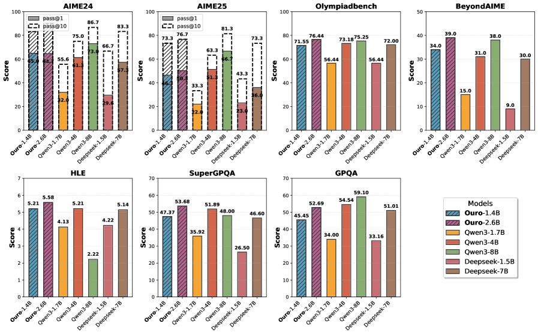
5.2 Thinking 模型：推理监督微调之后
Thinking 模型在推理时同样循环 4 遍，并且会写很长的思维链。评测基准包括：AIME 2024 / 2025（美国数学邀请赛，每年 30 道题，答案是 0–999 的整数）、OlympiadBench（奥赛级题目）、GPQA（448 道研究生水平的物理、化学、生物选择题）、SuperGPQA（扩展到约 285 个学科）、BeyondAIME（比 AIME 更难、强调防污染）和 HLE（多学科专家出题）。所有模型都用同一个内部评测框架、同样的提示，由大模型按固定评分标准判对错，解码统一用 temperature = 1.0、top_p = 0.7。
| 模型 | AIME24 pass@1 / @10 | AIME25 pass@1 / @10 | OlympiadBench | BeyondAIME | HLE | SuperGPQA | GPQA |
|---|---|---|---|---|---|---|---|
| Ouro-1.4B-Thinking（4 遍） | 65.0 / 83.3 | 46.3 / 73.3 | 71.6 | 34.0 | 5.21 | 47.4 | 45.5 |
| Ouro-2.6B-Thinking（4 遍） | 64.7 / 90.0 | 50.3 / 76.7 | 76.4 | 39.0 | 5.58 | 53.7 | 52.7 |
| Qwen3-1.7B | 32.0 / 55.6 | 22.0 / 33.3 | 56.4 | 15.0 | 4.13 | 35.9 | 34.0 |
| Qwen3-4B | 61.3 / 75.0 | 51.3 / 63.3 | 73.2 | 31.0 | 5.21 | 51.9 | 54.5 |
| Qwen3-8B | 73.0 / 86.7 | 66.7 / 81.3 | 75.3 | 38.0 | 2.22 | 48.0 | 59.1 |
| DeepSeek-R1-Distill-Qwen-1.5B | 29.6 / 66.7 | 23.0 / 43.3 | 56.4 | 9.0 | 4.2 | 26.5 | 33.2 |
| DeepSeek-R1-Distill-Qwen-7B | 57.3 / 83.3 | 36.0 / 73.3 | 72.0 | 30.0 | 5.14 | 46.6 | 51.0 |
数字来自原文表 9。
论文的读法是：1.4B 的 Thinking 模型与 4B 模型相当，例如 OlympiadBench 71.55 对 Qwen3-4B 的 73.18，BeyondAIME 34.0 对 31.0；2.6B 与 8B 相当甚至更好，OlympiadBench 76.44 对 Qwen3-8B 的 75.25，BeyondAIME 39.0 对 38.0。
- 解码设置对 Qwen3 不利。Qwen3 技术报告里，思考模式用 temperature 0.6、top-p 0.95、top-k 20，AIME 允许最长 38,912 个 token，报告的 AIME24 / AIME25 是：Qwen3-1.7B 48.3 / 36.8，Qwen3-4B 73.8 / 65.6，Qwen3-8B 76.0 / 67.3。在 Ouro 的统一设置下，这三个模型分别只有 32.0 / 22.0、61.3 / 51.3、73.0 / 66.7。两边的设置不同，不能把数字混在一起比；但如果按 Qwen 自己的设置，Qwen3-4B 的 AIME24 会比 Ouro-1.4B-Thinking 的 65.0 高出约 9 分。所以“1.4B 追平 4B”这个结论依赖于评测设置。
- 样本量小。AIME 每年只有 30 道题，一道题就是 3.3 分；论文没有说明 pass@1 是对多少次采样取的平均。HLE 所有模型都在 2–6% 之间，Qwen3-8B（2.22）还低于 Qwen3-1.7B（4.13），基本看不出能力差别。
- Thinking 模型是“循环 + 思维链”叠加。它每生成一个 token 都要循环 4 遍，而且要生成很长的思维链。1.4B 版每个 token 约 10.07 GFLOPs，比 Qwen3-4B 的 8.04 还多；2.6B 版约 19.9 GFLOPs，比 Qwen3-8B 的约 15.1 多约三成（推算，口径同 §1）。
5.3 循环步数与外推：多循环几遍会更好吗
模型训练时最多循环 4 遍（\(T=4\)）。论文把基座模型和 Thinking 模型分别在 \(T=1\) 到 \(T=8\) 下评测，\(T=5\) 到 8 属于“外推”，即循环次数超出训练时见过的范围（原文表 10–13）。
| 循环步数 T | 1 | 2 | 3 | 4 | 5 | 6 | 7 | 8 |
|---|---|---|---|---|---|---|---|---|
| 1.4B 基座，6 项平均 | 49.93 | 66.90 | 71.55 | 72.39 | 71.32 | 71.14 | 70.49 | 69.87 |
| 2.6B 基座，6 项平均 | 59.98 | 73.37 | 76.58 | 77.44 | 77.23 | 76.94 | 76.84 | 76.44 |
| 1.4B-Thinking，AIME24 | 0.00 | 37.33 | 62.33 | 65.00 | 60.67 | 50.67 | 42.33 | 38.67 |
| 1.4B-Thinking，OlympiadBench | 2.22 | 59.70 | 70.67 | 71.55 | 72.30 | 69.48 | 69.04 | 66.81 |
| 2.6B-Thinking，OlympiadBench | 18.96 | 68.59 | 75.56 | 76.44 | 71.85 | 69.19 | 57.63 | 39.26 |
| 2.6B-Thinking，AIME24 | 3.00 | 52.00 | 70.33 | 64.70 | 57.00 | 56.33 | 49.67 | 39.00 |
基座两行是 ARC-C、ARC-E、CommonsenseQA、HellaSwag、MMLU、Winogrande 六项的平均（本站按原文表 10、11 计算，与项目主页给出的平均一致）；其余数字来自原文表 12、13。
论文的结论是：基座模型在常规基准上的成绩随步数上升，到训练深度 \(T=4\) 达到最高；外推到 5–8 步时有中等程度的下降。Thinking 模型在 \(T=1\) 时几乎为零，说明迭代对这些难题是必需的；1.4B 的峰值在 \(T=4\) 或 5，2.6B 的峰值稍早，在 \(T=3\) 或 4；到 \(T=6\)–8 都明显变差，说明性能是针对训练见过的深度优化的。作者猜测，推理题需要很长的生成，给了不同深度更多“探索”的机会，所以峰值不像基座评测（多为比概率）那样严格落在 4。与此形成对比的是，§7 会看到安全性在外推步上仍在改善。
- “外推”基本没有收益。循环模型最吸引人的设想之一，是遇到难题时“多想几遍”。但在 Ouro 上，多循环只在训练过的范围内有用，超过之后全面下降：2.6B-Thinking 的 OlympiadBench 从 76.44 掉到 39.26，1.4B-Thinking 的 AIME24 从 65.00 掉到 38.67。所以“循环深度是第三个扩展维度”在这里是一个训练时就要定下来的维度，而不是测试时可以随意拉长的旋钮。后来的 Iso-Depth 研究也据此把循环次数当作架构参数来处理。
- 报告用的第 4 步不总是最好的。2.6B-Thinking 在 \(T=3\) 时有三项比 \(T=4\) 更好（SuperGPQA 56.70 对 53.68，AIME24 70.33 对 64.70，AIME25 50.67 对 50.30）。论文在表 9 里统一报告 \(T=4\) 的数字，这是诚实的做法；但它也说明，对这个模型来说少循环一遍可能又省又好。
- 第 1 步几乎不能用。Thinking 模型在 \(T=1\) 时成绩接近零，基座模型的 MMLU 只有 41.21。所以在生成任务上，所谓“简单题只算一遍”的空间很小，实际可选的深度主要在 2–4 之间。
- 表 10 里 1.4B 在 \(T=4\) 时 MMLU 是 67.45，表 7 里是 67.35；表 11 里 2.6B 的 Winogrande 是 75.53，表 8 里是 75.85。差别不大，但说明这些表不是同一次评测的输出。
5.4 提前退出：退出门到底能省多少
论文比较了四种决定“何时停下”的办法，都在 MMLU 上测，横轴用“平均退出轮数”表示计算量：
- 固定深度（基线）：不管输入是什么，都在第 1、2、3 或 4 步停下。
- 隐藏状态差阈值：每一步计算 \(\Delta h_{t}=\|h_{t}-h_{t-1}\|_{2}\)，变化小于阈值 \(\epsilon\) 就停。这是一个不需要训练的启发式规则：表示不怎么变了，说明算得差不多了。
- 只经过第一阶段的门（论文称“untrained”）：预训练里用熵正则学出来的门，按 Q-exit 阈值停。
- 经过第二阶段的门（“trained”）：再用 §3.4 的改进量标签专门训练过的门。
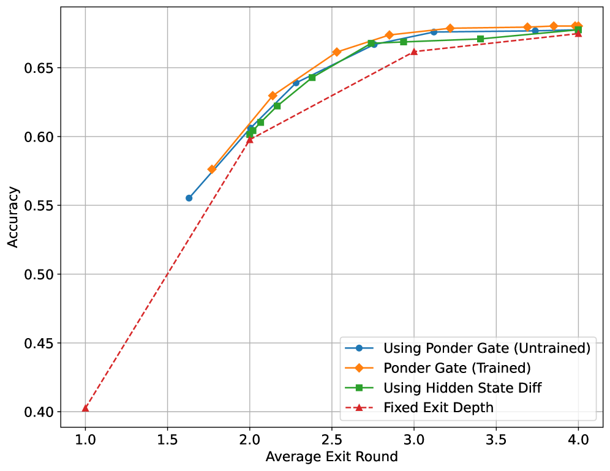
论文总结了五点。第一，经过第二阶段的门在每个计算预算下都最好；平均 2.5 轮时它约为 66%，只经过第一阶段的门约 64%。第二，即使没有第二阶段，第一阶段的门也明显好于固定深度，说明熵正则加均匀先验已经让门学到了“难度”的信号。第三，隐藏状态差阈值出奇地有竞争力，在 2–3 轮的中等预算下离最好的门只差 1–2 个百分点。第四，两种门之间的差距在多数工作点上约 2–3 个百分点，作者认为这证明了第二阶段的价值。第五，固定深度从 1 轮到 2 轮提升最大（40% 到 60%），从 3 轮到 4 轮只到 67.35%，收益递减，所以多数样本在中等深度就接近最好成绩，只有少数需要算满。
- MMLU 是比概率的选择题，不需要生成；“平均退出轮数”是按门的决定算出来的名义计算量。前面讲过，官方推理代码会把 4 遍都算完再挑读哪一步，所以这里的节省并没有在实现中兑现。真正生成文字时，一个 token 提前退出会缺少后几步的 KV，后续 token 无法在深层“看到”它；这个问题论文没有讨论，后来的 “Enabling Dynamic Computation in Looped LMs”（arXiv 2610.09013）正是从这里指出 Ouro 的动态计算在实际中没有实现。
- 从图上读，同一平均轮数下橙线和蓝线大多相差 1 个点左右，比正文说的 2–3 个点小；而完全不需要训练的隐藏状态差阈值又紧贴在后面。后来的独立分析（arXiv 2607.20519，在 Ouro-1.4B / 2.6B 上评测）也发现，简单的置信度读出常常追平甚至超过学出来的门。
5.5 KV 缓存共享：4 倍的缓存能不能省掉
生成文字分两个阶段。预填充（prefill）一次性处理用户输入的整段提示词，算出每个 token 在每一层的 key 和 value；解码（decode）每一步只处理刚生成的一个 token，用它的 query 去和前面所有 token 的 key、value 做注意力。为了不重复计算，前面 token 的 key 和 value 被存起来，这就是 KV 缓存（详见 vLLM 精读 §2.2）。普通模型每层存一份；循环模型的每一遍都会产生一份不同的 key、value，所以默认要存“层数 × 循环次数”份，Ouro 是 4 倍。
论文分两个阶段讨论能不能复用。预填充阶段，四步都需要各自的 KV 缓存，因为每一步都在实质性地改变表示，用别的步代替会让 GSM8K 掉 10 分以上。解码阶段则可以复用。他们试了三种只保留一份缓存的办法：只留最后一步（第 4 步）的、只留第 1 步的、留四步的平均值；所有循环步在解码时都去读这一份。
| 解码时的 KV 策略（Ouro-1.4B） | GSM8K | MATH-500 | 缓存缩小 |
|---|---|---|---|
| 完整缓存（每步一份） | 78.92 | 82.40 | 1× |
| 只留第 1 步 | 18.73 | 8.43 | 4× |
| 只留最后一步 | 78.85 | 80.40 | 4× |
| 四步平均 | 78.73 | 78.52 | 4× |
数字来自原文表 14。基线数字与表 7 中 Ouro-1.4B 基座模型相同。
只留第 1 步会崩溃（GSM8K 从 78.92 掉到 18.73），说明浅层的表示不足以支撑后面的解码；只留最后一步或四步平均，GSM8K 都只差不到 0.3 分，同时缓存缩小 4 倍；最后一步在 MATH-500 上比平均更好，说明最后一步的表示对后续生成最有用。作者据此认为，LoopLM 部署时的内存占用可以和同参数的标准 Transformer 相当。
- 预填充省不掉。提示词部分每一步都要用自己的 KV，计算量也是 4 倍。论文没有说清楚解码时提示词部分保留哪一份；如果之后还要继续预填充新内容（多轮对话、分块预填充），前文每一步的 KV 都得留着，否则就会落入“预填充阶段复用 KV、GSM8K 掉 10 分以上”的情形。
- 基数本来就大。Ouro 用的是没有分组的多头注意力，即使只留一步，每个 token 192 KiB，也比用 GQA 的 Qwen3-4B（144 KiB）更大。所以“只留一步”的结果是和“同参数、同样不用 GQA 的稠密模型”相当，而不是和同代的小模型相当。
- 长生成上不一定安全。MATH-500 已经掉了 2 分（82.40 到 80.40），这是生成更长的任务。后来的 Looped Latent Attention（arXiv 2607.15456）在相同缓存预算下比较了多种压缩方法，结论是循环缓存是低秩的，但“不能安全地塌缩成单一一步”，只留最后一步不如他们的压缩方案。
5.6 结果的份量
这一小节不是论文的内容，而是本站把上面的结果放回“对齐了什么、没对齐什么”的框架里重新看一遍。
比较里对齐的只有参数量。论文所有和外部模型的比较都是“参数少的 Ouro 对参数多的稠密模型”。按每个 token 的推理计算量，Ouro-1.4B（10.07 GFLOPs）比 Qwen3-4B（8.04）多约 25%，Ouro-2.6B（约 19.9）比 Qwen3-8B（约 15.1）多约 30%（推算，见 §1 的示意图）。按 KV 缓存，默认实现是同参数稠密模型的 4 倍。按训练数据，Ouro 是 7.7T，Qwen3 是 36T，而且两边的数据内容完全不同。所以“1.4B 打平 4B”应读作：在更多的推理计算、更少但不同的训练数据下，用三分之一的参数达到了相近的推理成绩。
按训练总计算量看，Ouro 并不吃亏。循环模型训练时每个 token 也要算 4 遍（第一段 3T 还是 8 遍），但 Ouro 只训了 7.7T token。按 \(6N\times\) token 数的经验公式，Ouro-1.4B 的训练总量约 \(3.4\times10^{23}\) FLOPs（Closing the Loop 附录 I 的估计，本站按同口径复算一致），Qwen3-1.7B 约 \(3.7\times10^{23}\)（同一来源），Qwen3-4B 约 \(8.7\times10^{23}\)（推算）。也就是说，Ouro-1.4B 的训练花费和 Qwen3-1.7B 差不多，而它在表 7 的 12 项上全部胜过 Qwen3-1.7B。这是对 Ouro 比较有利的一个读法；代价是它的推理计算量约是 Qwen3-1.7B 的 2.9 倍，而且数据不同。
受控研究怎么说。Ouro 之后，有几篇工作专门把各本账对齐来测“循环到底值多少”：
- Ouro 自己的附录 D：在 FineWeb-Edu 上训 20B token、53M 到 1.36B 五个尺寸，拿循环模型和“把层数乘上循环次数、不共享权重”的标准模型比，两者前向计算量相同、后者参数更多。结果标准模型在所有设置下都更好，差距随循环步数增大（详见 §8）。
- Iso-Depth（arXiv 2604.21106）：在训练计算量相同的条件下拟合扩展律，一次循环相当于 \(\varphi=0.46\)（95% 置信区间 0.41–0.53）个独立的层块：一个 410M、循环 4 遍的模型，效果相当于 580M 的不循环模型，训练成本却和 1B 的不循环模型一样。如果把这个 \(\varphi\) 粗略套到 Ouro-1.4B 上（只作量级参考，两边的规模、数据和配方都不同），1.233B 非嵌入参数循环 4 遍约等于 \(4^{0.46}\times1.233\approx2.3\)B 的非嵌入参数（推算），而 Qwen3-4B 约有 3.6B。
- Parcae（arXiv 2604.12946）：固定参数量和数据量（不固定计算量），770M、循环 8 遍的 Parcae 在 Core 综合分上是 25.07，同尺寸 Transformer 是 22.42，1.3B Transformer 是 25.45；也就是说，它补上了“同尺寸”到“约两倍尺寸”之间 87.5% 的差距（\((25.07-22.42)/(25.45-22.42)\)，原文表 5）。这仍是一个同参数、多花计算的比较。
- SMELT（arXiv 2609.01343）：在混合专家模型上同时对齐每个 token 的计算量、总参数和 KV 缓存，只把中间一半的层循环两遍，在计算最优前沿上节省 6.8–18.0% 的训练计算量。值得一提的是，SMELT 的作者名单与 Ouro 有重叠：其中有同名的 Ge Zhang 和 Wenhao Huang，单位同样包括 ByteDance Seed。
- Closing the Loop（arXiv 2610.00673，ICLR 2027 投稿）：用和 Ouro-1.4B 相同的结构，在 310B token 上从头训，并训练了两个“双胞胎”稠密模型，数据、阶段、token 数完全相同。结果见下表。
| 同数据对照（310B token） | 稠密 1.4B （同参数） | LoopLM 3 遍 | LoopLM 4 遍 | 稠密 3.9B （同推理计算 = 3 遍） | 参考：Ouro-1.4B （7.7T token） |
|---|---|---|---|---|---|
| GSM8K | 69.14 | 81.58 | 83.32 | 82.79 | 78.9 |
| MATH | 54.10 | 63.64 | 63.80 | 64.54 | 70.9 |
| MATH500 | 55.00 | 63.60 | 63.20 | 63.60 | 82.4 |
| DROP（F1） | 38.59 | 57.40 | 60.57 | 58.57 | 49.7 |
| MMLU | 46.52 | 55.93 | 56.84 | 58.15 | 67.4 |
| MMLU-Pro | 17.48 | 24.27 | 24.53 | 28.22 | 48.6 |
| HellaSwag | 57.28 | 58.92 | 59.29 | 67.91 | 74.3 |
数字来自 Closing the Loop 的表 2（前四列，均值的标准误约 0.4–2 分）和表 3（最后一列；该文说明表 3 只作背景参考，各模型的评测设置和训练量不同）。全表共 12 项，这里选了 7 项。
这张表把论文没法分开的两件事分开了。同参数时，循环 4 遍在全部 12 项上都胜过不循环的双胞胎，GSM8K 高 14 分、MATH 高约 10 分、DROP 高 22 分，循环本身的收益是真实的。同推理计算时，72 层的 3.9B 稠密双胞胎在每一项上都领先或持平；循环模型在数学和阅读理解上能贴近它，差距集中在知识和常识类（2–9 分），正好对应“参数多的模型存的知识多”。还有一点：循环模型训练时每个 token 跑满 4 遍，训练成本是 3.9B 双胞胎的 1.4 倍。最后一列也说明，Ouro-1.4B 的 MATH500 82.4、MMLU-Pro 48.6 这类高分，大部分来自 7.7T 的训练量和它的数据，而不是循环结构本身（同结构 310B token 的版本只有 63 和 24.5）。
- 规模：1.4B 和 2.6B，7.7T token；这是循环模型里训练量最大的公开工作之一，但仍是小模型。
- 对齐了什么：只对齐了参数量。推理计算量、KV 缓存、训练数据都没有对齐；训练总计算量和 Qwen3-1.7B 接近。
- 基线：都是公开的官方权重，由作者用同一框架重测，不是重新实现；推理模型统一用 temperature 1.0 / top_p 0.7，与 Qwen3 官方推荐设置不同，Qwen3 的分数明显低于其自报值。
- 独立验证：Closing the Loop 在同数据下复现了“同参数时循环明显更强”，也确认了“同推理计算时更大的稠密模型更强”；Iso-Depth 给出一次循环约值 0.46 个独立层块。
- 开放程度：四个权重以 Apache-2.0 开放，有官方推理代码；没有官方训练代码，项目主页链接的训练实现 rkstgr/LoopLM 是社区复现。
6 为什么有效：知识容量与知识操作
Allen-Zhu 和 Li 的“语言模型物理学”系列用人造数据研究语言模型：数据是按已知规则随机生成的，所以里面有多少信息可以精确算出来，模型学到了多少也就能精确量出来。
- 知识容量（capacity）问的是：模型的权重里能可靠地存下多少比特的事实。比如随机生成一批虚构人物，每人有生日、城市、大学、专业、雇主等属性，属性是随机抽的，所以一个人的属性组合就携带固定的信息量。训练后看模型给出真实属性的概率有多高，就能换算出它记住了多少比特；再除以参数个数，得到“每个参数存多少比特”。他们此前发现，GPT-2 这类模型在每条知识见过约 1000 次的条件下，大约是每个参数 2 bit。
- 知识操作（manipulation）问的是：模型能不能把存下的事实用起来，得到训练中没直接见过的结论。比如知道“甲的老师是乙”和“乙的导师是丙”，能不能直接答出“甲的老师的导师是谁”；知道模 23 的加法和乘法表，能不能直接算出一整棵表达式树的值。这些任务需要的“原子事实”可能不多，难在组合。
6.1 容量：循环与否都是每个参数约 2 bit
设置。沿用 Capo 任务：生成 \(N\) 个虚构人物的传记数据集 bioS(\(N\))，每人有一个名字和若干随机属性，用随机挑选的模板写成一段自然语言（例如“某某生于 1914 年 1 月 24 日，在缅因州波特兰长大，主修商业分析，后来在某航空公司任职……”这类句子）。名字和属性都从预定义的集合里随机抽，所以存下全部信息至少需要多少比特，有一个信息论下界。训练 GPT-2 风格的模型（位置编码换成 RoPE，输入输出嵌入共享），参数从 1M 到 40M，宽度和深度都在变；\(N\) 取 2 万、5 万、10 万、20 万、50 万；每条传记训练中出现 1000 次。对每种尺寸，比较循环 1 遍和循环 4 遍的模型。
怎么量。附录给出的容量比定义是：
其中 \(P\) 是参数个数，\(p_{1}\) 是每人名字部分的总损失，\(p_{2}\) 是给定名字后各属性值的总损失（单位 nat），\(N_{0}=400\times400\times1000\) 是可能的名字数，\(S_{0}\) 是可能的属性组合数。直观地说，如果模型完全不知道某人的属性，只能随机猜，那么 \(p_{2}=\ln S_{0}\)，这一项为 0 比特；如果完全记住，\(p_{2}=0\)，这一项就是 \(\log_{2}S_{0}\approx47.6\) 比特。部分记住（比如记得年份、记不清日期）也按比例计分。
算个例子（推算）。10 万人、每人约 47.6 比特属性信息，属性部分合计约 476 万比特；名字部分每人约 \(\log_{2}(N_{0}/N)\approx10.6\) 比特，总上限约 580 万比特。按每个参数 2 比特，至少要约 290 万参数才能全部记住；一个 1M 参数的模型最多只能存约 200 万比特。
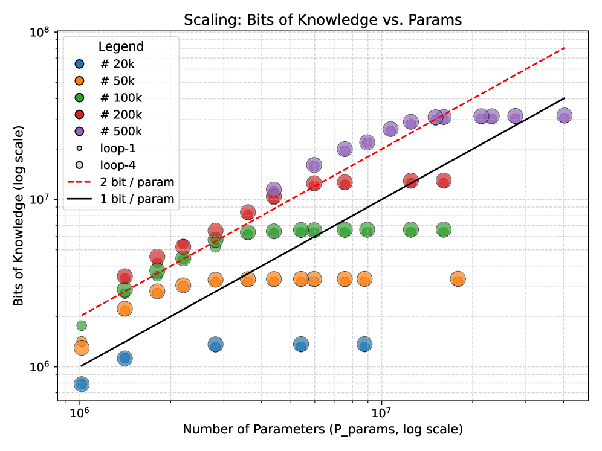
结论。循环既不增加知识容量，也不改善容量随参数的扩展：循环与否的模型都落在每个参数约 2 bit 附近。所以参数个数本身就是知识容量的直接指标，单靠多循环几遍不能让模型记住更多东西。这和 §5 的观察一致：在偏知识的 MMLU、HellaSwag 上，参数更多的模型仍然领先；Closing the Loop 的同数据对照里，循环模型落后同计算量稠密模型的地方也正是知识和常识类基准。
6.2 操作：模运算表达式与多跳问答
自然语言不只是单跳的事实。预测下一个 token 往往需要把几条知识组合起来，这就是知识操作。作者用两个合成任务检验“循环是否更擅长灵活使用知识”。
任务一：Mano（模运算表达式树）。输入是用前缀表示法写的表达式，运算只有加、减、乘，全部在模 23 下进行；模型必须不写任何中间步骤，直接输出一个 token 作为答案。比如前缀式“+ × 4 6 − 9 2”表示 \((4\times6)+(9-2)=31\)，模 23 后答案是 8。要做对，模型需要两样东西：一是存在参数里的模 23 运算规则（这是“知识”，总量不大），二是解析树结构、把各步结果组合起来（这是“操作”）。难度由最大运算个数 \(L\) 控制，取 10、16、24：训练时混合长度 1 到 \(L\) 的样本，测试只用最难的长度 \(L\)。
记号 \(a\otimes b\) 表示“\(a\) 层、循环 \(b\) 遍”。基线是不循环的 \(\{2,3,6,12\}\otimes1\)，循环模型是 \(2\otimes6\)、\(3\otimes4\)、\(6\otimes2\)：它们的层数各不相同，但“层数 × 循环次数”都是 12，所以和 \(12\otimes1\) 的计算量相同、参数只有它的 1/6 到 1/2。隐藏维度 1024，每个设置跑 3 个随机种子。
| 模型（层数 ⊗ 循环次数） | L = 10 | L = 16 | L = 24 |
|---|---|---|---|
| 12 ⊗ 1（计算量相同的不循环基线） | 93.6 | 94.4 | 34.8 |
| 2 ⊗ 1 | 21.5 | 8.4 | 7.5 |
| 2 ⊗ 6 | 98.1 | 96.3 | 78.0 |
| 3 ⊗ 1 | 75.4 | 29.8 | 11.0 |
| 3 ⊗ 4 | 97.9 | 95.8 | 92.2 |
| 6 ⊗ 1 | 84.7 | 59.5 | 20.0 |
| 6 ⊗ 2 | 93.4 | 88.5 | 35.1 |
准确率（%），数字来自原文图 6 右侧的表。
同参数时，循环模型总是大幅胜过不循环的版本（例如 3 层：L = 24 时 11.0 对 92.2）。和计算量相同的 12 层模型比，循环模型也常常更好，最显眼的是 \(3\otimes4\) 在最难的 L = 24 上做到 92.2，而 12 层只有 34.8。作者据此认为 LoopLM 对知识操作有更好的归纳偏置：在同样的训练样本和计算预算下，当任务需要大量操作（解析运算树）而所需知识有限（模运算规则）时，循环模型学得更好。
任务二：合成关系上的多跳问答。这个任务来自 Yao 等人，更接近自然语言、也更“吃知识”。数据里有 500 个单 token 的人名，分成 5 层、每层 100 人；有 20 种单 token 的关系（如“导师”“老师”），每个人和下一层随机若干人之间有关系。单跳事实写成“A 的导师是 B”这样的句子；问题是多跳的，例如“A 的导师的老师的上司是谁？”，模型必须在内部连跳几步、直接输出一个 token。作者只看 3 跳问题，所有可能的 3 跳问题共 \(100\times20^{3}=8\times10^{5}\) 个。Yao 等人发现，标准 Transformer 要学会 \(k\) 跳推理，需要的样本数随 \(k\) 指数增长，所以这里关心的是样本效率：用多少条不同的问答，模型才能在留出的 3000 道测试题上全对。
模型是 6 层、隐藏维度 1024、16 个头，分别循环 1、2、4 遍；训练 2 万步，批大小 2048，4 个种子取平均。训练集分别取全部问答的 2.5% 到 25%（2 万到 20 万条）。
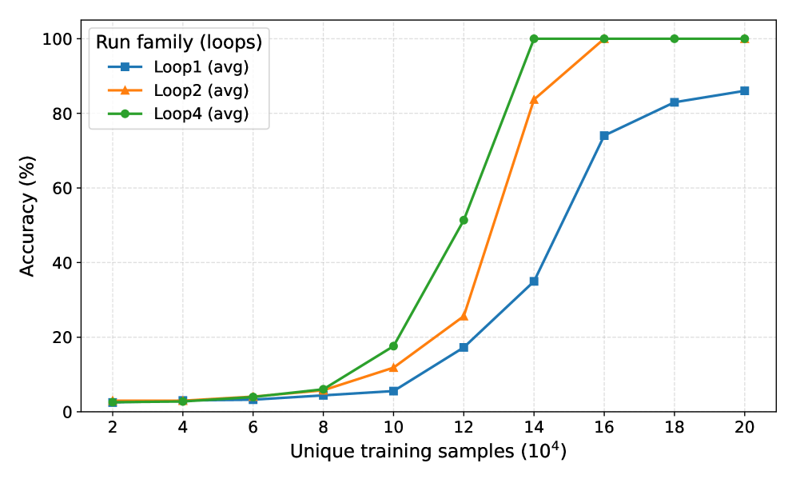
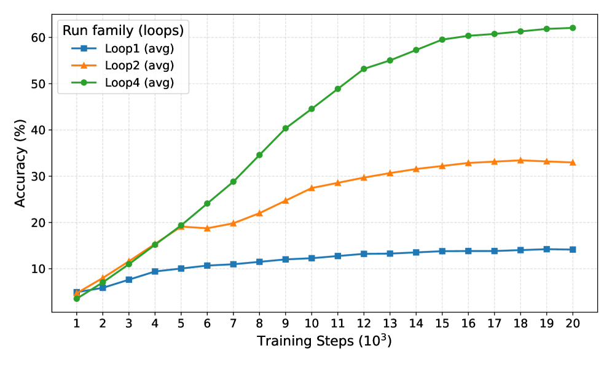
附录还补了“计算量相同”的对照：一个不循环的 24 层模型（与循环 4 遍的 6 层模型计算量相同）。结果是循环模型在数据更多时仍然领先；循环 2 遍在 10 万条时弱于这个 24 层模型（它的等效深度只有 12 层），但数据增多后反超。作者在脚注里也坦白，24 层基线在 12 万条时并没有比浅的版本好多少，可能是随机性或调参不足，需要后续实验确认。
真实基准上的旁证。附录 B.4 把 MMLU 的 57 个子类按“循环 1 遍到 4 遍的相对提升”排序。提升最多的是初等数学 +155.6%（0.3095 到 0.7910）、形式逻辑 +143.3%、逻辑谬误 +127.8%、高中统计 +126.9%；提升最少的是道德情境 +7.8%（0.2436 到 0.2626）、全球事实 +8.3%（0.36 到 0.39）、病毒学 +13.7%、解剖学 +21.4%。作者认为这说明循环主要增强逻辑、数学这类程序性推理，而对依赖记忆事实的类别帮助有限。
6.3 一个理论构造：用对数次循环求解图可达性
为什么循环天然偏向知识操作？作者的猜想是：预训练让模型存下大量事实，事实之间的依赖关系构成一张“参数里的知识图”；难题需要在这张图上沿着依赖关系多走几步。循环结构可以反复执行同一套检索和组合的程序，前一遍没用到的知识，后一遍还能再取。
为了说明循环“能”做到这一点，论文证明了一个表达能力的结果（v6 版对条件写得非常明确）。问题是图可达性：有 \(n\) 个节点，一部分边 \(G\) 存在模型参数里（“隐藏的知识图”），另一部分边 \(G_{\mathrm{ctx}}\) 在输入里给出；问从 \(s\) 出发能不能走到 \(t\)。记 \(D\) 为所有可达点对之间最短路径长度的最大值。定理说：在指定的输入编码（邻接矩阵按列作为 token）、不加因果掩码的全注意力、以及一个逐元素阈值算子（不是常规的 RMSNorm）下，存在一个单层、单头、隐藏维度 \(2n\) 的循环 Transformer，参数与 \(G_{\mathrm{ctx}}\) 无关，循环
次后就能回答所有可达性查询，之后再多循环也保持正确。构造的核心是布尔矩阵的反复平方：用 \(R_{i}\) 表示第 \(i\) 遍后“已知可达”的点对，注意力把已知路径两两拼接（\(R_{i}\lor R_{i}^{2}\)），前馈网络把参数里的隐藏边加进来（\(\lor A\)），即 \(R_{i+1}=R_{i}\lor R_{i}^{2}\lor A\)。每拼接一次，覆盖的路径长度就翻一倍。
论文把它和两种思维链对比：离散思维链需要 \(O(n^{2})\) 个顺序步骤，连续思维链需要 \(O(1+D)\)，循环模型只要 \(O(1+\log\max\{1,D\})\)。
样本效率的猜想。表达能力解释不了“为什么循环模型学这些任务需要的样本更少”。作者猜测：如果任务需要反复应用同一套检索或运算程序，不共享权重的深网络得在每个深度分别学一遍这套程序，要搜索的函数空间很大；共享权重把搜索限制在一个小得多的假设空间里，从统计上降低了样本复杂度。这是一个合理但没有被证明的解释。
7 安全、忠实性与一致性
7.1 安全：有害性随循环步数下降
作者用 HEx-PHI 数据集评估安全性：330 条违规请求，覆盖 11 个禁止类别；GPT-4o 作为评委，给每条回答打 1–5 分的有害分（越高越不安全），“有害率”是得到最高分 5 的比例。基座模型用贪心解码、最多生成 128 个 token；Thinking 模型用 temperature 1.0、top_p 0.7、最多 8192 个 token。循环步数从 1 到 8 都测（5–8 是外推）。
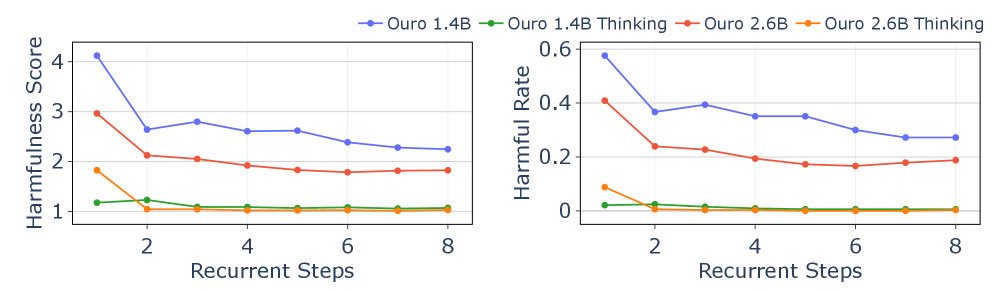
为了看清循环步数如何影响安全对齐，作者对 Ouro-1.4B 做了主成分分析（PCA）：选 100 条无害和 100 条有害的问题，格式都一样（都以“How to”开头），取最后一个输入 token 在最顶层的隐藏状态，投影到前两个主成分上。
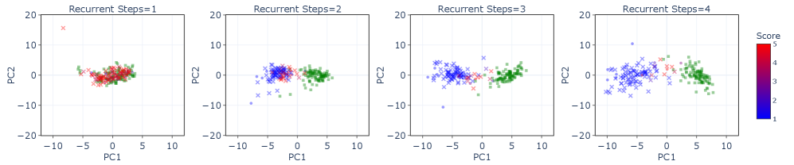
- 基座模型的“安全”从哪来。基座模型没有经过安全对齐训练；它在多循环时更会拒绝，很可能来自中期训练里那 90B token 的 SFT 风格对话数据（§4.2）。而第 1 步本来就是一个几乎不能用的截断网络（MMLU 只有 41），所以“第 1 步很危险”部分反映的是“第 1 步什么都做不好”。
- “外推时安全继续变好”要谨慎理解。第 5–8 步时，模型在常规基准上的能力在下降（§5.3），而 1.4B 的有害率仍在降。能力变弱的模型本来就更难写出“有用的”有害内容，所以这不一定说明“迭代仍在加强对齐”；而且 2.6B 基座在第 7、8 步的有害率是略有回升的。
- 没有同条件的稠密对照。基座模型的有害性只和自己的不同步数比，Thinking 模型只和 Qwen3-4B-Thinking 一个模型比。有害分来自 GPT-4o 评委，基座回答最多只有 128 个 token。
7.2 忠实性：中间步骤是不是真的参与了决定
线性探针是一个检查“某个信息是否已经存在于隐藏状态里”的工具：冻结模型，在某一层的隐藏状态上训练一个最简单的线性分类器（逻辑回归）去预测某个标签。如果这样一个简单分类器就能预测得很准，说明这个信息在这一层已经可以线性读出。ROC AUC 衡量二分类器把正负样本分开的能力：0.5 等于瞎猜，1.0 是完全分开。所以，“在模型开始写思维链之前，探针就能以 0.99 的 AUC 预测它最后的答案”，就意味着答案早已定好，后面写的思维链对结论几乎没有影响。
作者把“忠实”定义为两点：推理过程本身是对的，而且和最终答案有因果联系。检验因果联系的标准做法是反事实干预：改动推理的中间状态，看最终答案是否随之改变。越来越多的研究发现，标准大模型常常在写思维链之前就已经决定了答案，思维链只是事后的合理化。
在 LoopLM 里，推理的载体是隐藏状态的轨迹 \(h^{(1)}\to h^{(2)}\to\cdots\to h^{(T)}\)：每一次转移都用同一组权重做实质性的计算，而且每一步都直接受语言模型损失的监督。所以作者认为，用语言模型头把中间状态 \(h^{(k)}\) 读成文字，是对内部状态的一次“仪表读数”，而不是推理机制本身；而因为 \(h^{(k)}\) 直接受监督，这个读数能如实反映模型此刻的状态。
潜在轨迹不容易直接干预，所以作者用一个观察性的替代办法：在答案本身有歧义的输入上，看随着循环加深，预测会不会改变。数据是 Quora Question Pairs，问两个问题是否意思相同，其中很多对本身就模棱两可。例如“在 Quora 上哪些问题不该问？”和“我该在 Quora 上问什么问题？”标注为不同；“怎样准备联邦公务员委员会的考试？”和“怎样准备公务员考试？”标注为相同。如果思考过程只是为一个早已定好的答案找理由，那么即使问题很模糊，答案在思考前后也不会变。
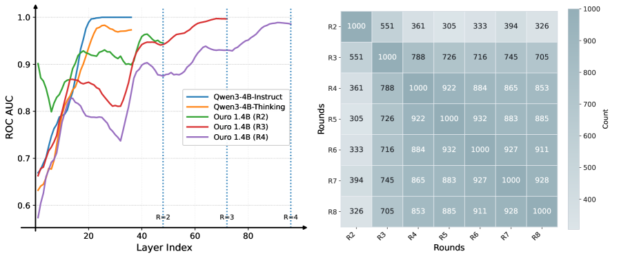
作者的解读如下。Qwen3-4B-Thinking 在最后一个 token 上的线性探针预测最终答案的 ROC AUC 达到 0.99，说明它的思考过程几乎不影响结果（作者说这一现象此前在 Gemma-2 9B 上被报告过，他们在 Qwen3-4B-Thinking 上复现了）。Ouro 则不同：在第 \(i\) 遍之内，第 \(24i\) 层的表示能很好地预测第 \(i\) 步的答案，这和不思考的 Qwen3-4B-Instruct 类似；但上一遍结束时（第 \(24(i-1)\) 层）的表示不能可靠地预测第 \(i\) 步的决定，说明新的一遍做了额外的计算，可以修改暂定的选择。一致矩阵也说明，前 4 步之间系统性地不一致，模型在循环加深时确实在更新决定；第 4 步之后相邻步几乎一致，作者解释为模型没有学过 4 步以上的循环，且答案逐渐收敛到不动点。作者的结论是：这正是一个忠实的潜在过程该有的样子，中间预测不是最终输出的冻结的事后合理化。
- “会改主意”不等于“忠实”。这组实验证明的是：第 2、3 步的读数并没有预先决定第 4 步的答案。但“后面的计算依赖前面的状态”在循环结构里是由架构保证的；真正的忠实性问题是“中间读数能不能解释最终答案”，而第 2 步的读数和最终答案只有 36% 一致，恰恰说明中间读数不能用来解释或监控最终答案。
- 36% 的一致率本身值得注意。这是一个二分类任务，如果两步的答案互不相关、且标签分布相近，一致率应该在 50% 左右。低于 50% 说明第 2 步和第 4 步有截然不同的标签偏好（比如一个多半答“相同”、另一个多半答“不同”）。因此不一致里有相当部分可能只是浅层读数不成熟，而不是“有意的修正”。论文没有给出各步在这个任务上的准确率，这个问题无法判断。
- 对比对象不对等。和 Qwen3-4B-Thinking 比的是“写出来的思维链”，和 Ouro 比的是“隐藏状态的循环”，两者的信息接口完全不同，也没有一个“同结构、只换推理方式”的对照。v6 摘要里说循环的推理轨迹“比显式思维链更与最终输出一致”，而 §7.2 的证据强调的是步与步之间的不一致，两种说法指的是不同的东西（一遍之内的一致与跨遍的改变），读的时候要分清。
7.3 部署上的几个设想
作者认为，一个实际的安全障碍是模型说出来的推理和最终答案可能脱节，而 LoopLM 暴露出一串和最终预测器紧密相关的中间预测器，可以同时用于加速和预先控制。他们列了三点设想（论文没有为它们做实验）：
- 自带草稿模型的投机解码。投机解码（见 投机解码精读）需要一个便宜的“草稿模型”先猜几个 token，再由大模型一次性验证。LoopLM 第 \(s\) 步的语言模型头天然就是草稿，第 \(T\) 步是验证者；两者共享前 \(s\) 步的计算和 KV，不需要另训草稿模型。
- 加速和事前安全筛查一起做。在把草稿 token 交给用户之前，先对第 \(s\) 步的草稿分布做安全筛查，发现违规就提前中止或改道；阈值 \(q\) 成了同时调节计算量、一致性和安全严格度的单一旋钮。
- 随时可停的预测。每一步都有一个预测分布，延迟受限时可以选一个中间深度。v6 特别加了一句：两个阶段的训练目标都不保证每多循环一步损失就一定下降，更深是否更好要针对具体任务和深度来检验；用中间预测当草稿时，必须先验证再输出。早期版本（v1–v5）在这里写的是“每多一遍都单调改进”的“随时可用的生成”，v6 删掉了这个说法。
第一点后来被独立工作实现了：WaveFront 解码在 Ouro-2.6B 上用浅层输出当草稿、并把不同深度的计算合并成一次批处理调用，比自回归解码快 2.42 倍；LoopSpec 用流水线化的自投机解码在多种循环模型上最高提速 6.83 倍（见“后来怎么样了”）。
8 结论，以及附录里的小规模扩展律
论文的结论。Ouro 是一族在 7.7T token 上预训练、把迭代计算和自适应深度直接做进预训练的循环语言模型；1.4B 和 2.6B 一贯追平或超过 4B 和 8B 的标准 Transformer，即 2–3 倍的参数效率。这种优势不是来自存储更多知识，而是来自更强的知识操作能力，有合成实验和理论分析支持。作者还给出了用均匀先验熵正则学习自适应深度的实用目标，并验证了让 LoopLM 可以实际部署的 KV 缓存共享策略。此外，迭代精炼的过程给出了因果上更忠实的推理轨迹，安全对齐也随循环步数改善，包括外推步。作者把迭代式潜在计算称为参数和数据之外关键的第三个扩展维度，并指出未来要改进更深循环时的外推能力、探索更复杂的循环机制。
附录 D：小规模扩展律。作者训练了 53M、134M、374M、778M、1.36B 五个尺寸，循环步数取 1、2、4、8，全部在 FineWeb-Edu 上训练 20B token，用 ARC-C、ARC-E、HellaSwag、LAMBADA、OpenBookQA、PIQA 六项的平均分评估。对照的“标准模型”在循环步数为 \(k\) 时就是把层数乘以 \(k\)、不共享权重，所以前向计算量相同，参数是循环模型的 \(k\) 倍。
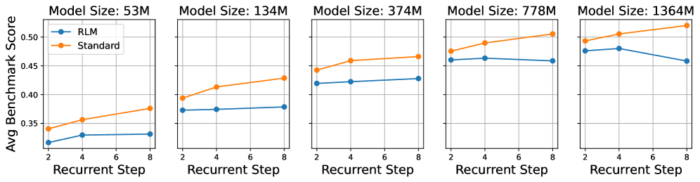
论文的文字总结是：两类模型都随尺寸和步数变好（778M 和 1.364B 的循环模型除外）；标准模型在相同条件下总是更好，差距随循环步数增大、随模型尺寸减小。原文表 18 给出的平均差距（标准减循环）是：步数 2 时 0.015–0.023，步数 4 时 0.025–0.039，尺寸越大差距越小（表 18 的尺寸写作 170M / 340M / 680M / 1.3B，与正文的五个尺寸对不上）。
附录 D 还拟合了两条扩展律。总损失扩展律把训练目标写成模型大小 \(N\)、数据量 \(D\)、最大循环步数 \(T_{m}\) 三项幂律之和加常数，用全部数据点拟合的 \(R^{2}\) 为 0.9596，留出部分尺寸、数据量或步数再预测也有 0.94–0.96。逐步损失扩展律把第 \(T\) 步的损失写成 \(N\)、\(D\)、\(T\) 的幂律，\(T_{m}=2,4,8\) 时 \(R^{2}\) 分别为 0.8898、0.8146、0.795；拟合出的 \(T\) 指数为正，说明损失随步数下降。一个有意思的现象是：模型较小时，浅层步骤的损失会随训练数据增多而上升。作者的解释与 §3.3 的推导一致：深层损失更低，训练目标把退出概率推向深层，而容量有限的小模型就“牺牲”浅层去换总损失下降；所以对 LoopLM 来说，更大的模型可能更有效。
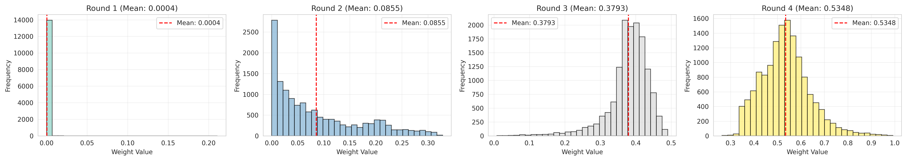
后来怎么样了
Ouro 于 2025 年 10 月 29 日发布论文和四个权重，此后成了循环语言模型研究最常用的公开检查点。项目主页在 2026 年 10 月统计，Semantic Scholar 上有 158 篇论文引用了它，作者挑出的 35 篇实质性后续工作里有 15 篇直接在 Ouro 的权重上做实验。论文本身更新到第 6 版（2026-10-11），主要是把目标函数写得更严谨（逐位置的门、各步损失的平均）、把理论定理的前提写明并收回“指数级减少顺序步骤”的说法、删除“每多一遍单调改进”的论断；实验数字没有变化。截至本页撰写时，arXiv 页面没有标注任何会议或期刊。下面只列能在原文摘要或代码仓库里核实的事实。
受控比较：循环到底值多少。这是本页最在意的一条线，§5.6 已经展开：Iso-Depth 测出同训练计算量下一次循环约值 0.46 个独立层块；Parcae 先解决循环训练的发散问题，再在同参数、同数据下比较；SMELT 在混合专家模型上把计算量、参数和 KV 缓存三本账全部对齐，循环中间一半的层两遍，仍省下 6.8–18.0% 的训练计算量；Closing the Loop（arXiv 2610.00673）用 Ouro-1.4B 的结构在 310B token 上复现了“同参数时循环明显更强、同推理计算时稠密模型更强”，并把从头训练的成本降到 Ouro 方案的约 3%，还给出把现成的 Qwen3-1.7B-Base 改造成循环模型的最小做法。
强化学习终于有了进展。Ouro 自己的 RL 尝试失败了。RLTT（arXiv 2602.10520，Williams 与 Tureci）认为问题在于 GRPO 只把奖励归到最后一步的潜在状态，于是把奖励分摊到整条潜在轨迹上；在 Ouro-1.4B / 2.6B-Thinking 上、相同训练和推理条件下，它在 MATH-500、AIME 和 BeyondAIME 上的平均准确率比 GRPO 分别高 5.8 和 10.9 个百分点（注意这些实验限制了 3072 个 token 的生成长度，Ouro-Thinking 本身在此设置下的分数也远低于论文表 9）。RLTT 的附录还实测了代价：Ouro-2.6B 循环 4 遍时每个 token 的推理 FLOPs 是 Qwen3-4B 的 2.63 倍。LoopRPT（arXiv 2603.19714）走得更早一步，把“预测下一个 token”改写成“为下一个 token 推理”，在预训练阶段用 EMA 教师和带噪声的潜在 rollout 直接给各个潜在步骤分配奖励，在多个尺寸的 Ouro 上改进了每一步表示的质量和准确率—计算量的权衡。Closing the Loop 也试了 RLTT，发现它在 rollout 成功率适中的检查点上有效（GSM8K 提高 12 分），在已经解出约四分之三 MATH rollout 的检查点上没有作用。
把 4 倍 KV 缓存和名义上的“提前退出”变成真的节省。这是在 Ouro 权重上做得最多的方向，因为 §5.4、§5.5 留下的两个缺口在部署时最痛：
- MELT（arXiv 2605.07721，ICML 2026 研讨会海报）：每层只保留一份 KV 缓存，跨循环共享并用可学习的门更新，从 Ouro 蒸馏得到，使内存不再随循环深度增长。
- Hybrid Latent Attention（arXiv 2610.07940）：只对最近一段窗口保留精确的 KV，更早的 token 存成紧凑的潜向量；在冻结的 Ouro-1.4B / 2.6B 上只训练新增参数，每个 token 的缓存缩小 10.7 倍，单卡并发序列数增加 4.0–8.8 倍，解码吞吐在 1K 上下文时提升 2.5 倍、16K 时最高 7.4 倍，保留 97% 以上的准确率。
- Looped Latent Attention（arXiv 2607.15456）：发现同一 token 的 K/V 在各次循环间沿一条低秩轨迹变化，存紧凑潜向量、用时再还原；在一张 H200 上把 Ouro-1.4B 在 4K 上下文时的批容量从 32 条提高到 768 条（21.3 倍压缩），并指出“只留最后一步”在相同缓存预算下不如它的做法。
- FlashLoop（arXiv 2609.29812）：不需训练，利用循环之间的冗余（只有少数 token 还在变、注意力只在少数键上变化、相邻循环的 KV 残差适合低比特量化），在多个循环模型上无损提速最高 1.64 倍、KV 缓存最多缩小 6 倍。
- Enabling Dynamic Computation in Looped LMs（arXiv 2610.09013）：直接指出 Ouro 的动态计算在实际中没有兑现，因为每个深度都需要自己那一层 KV，迫使所有循环都要算；提出“用能拿到的最深 KV”的缓存策略，在保持满深度性能的同时省下最多 30% 的 FLOPs 和 KV 内存，并修改退出先验的施加方式，让不同 token 真的在不同深度退出。
- Continuous Depth Batching（arXiv 2608.09444，与 Iso-Depth 同一组作者）：不同深度退出的 token 无法放进 vLLM 那样统一的前向批次，于是在循环步之间重新组批、提前预测谁会退出；在 Ouro-1.4B 上实现了估计最大加速的 99%，并发现 Ouro 这种“整组循环”的结构最适合深度自适应推理。
- 投机解码与量化：WaveFront（arXiv 2609.23033）把浅层输出当草稿、把不同深度的计算合成一次批调用，在 Ouro-2.6B 上比自回归解码快 2.42 倍；LoopSpec（arXiv 2609.17184）用流水线化的自投机解码，在多种循环模型上最高提速 6.83 倍；Loopy（arXiv 2610.05265）针对“共享核心的量化误差会随循环累积”设计后训练量化，在 Ouro-1.4B 的 W4A4 设置下把 LAMBADA 困惑度比 SpinQuant 降低 36.5%。这些正是 §7.3 设想的落地。
稳定性、解码与分析。STARS（arXiv 2605.26733）用雅可比谱半径正则让潜在状态收敛到稳定不动点，缓解了“循环加深后性能先升后崩”的问题，并提高了峰值；LoopCD（arXiv 2609.24196）在解码时拿早期循环的 logits 和最后一步做对比，无需训练就改进了推理；“Adaptive Depth in Looped Transformers”（arXiv 2607.20519）在合成任务和 Ouro-1.4B / 2.6B 上发现，学出来的退出门有竞争力但并非处处最优，简单的置信度读出常常追平甚至更好，问题主要出在联合训练门时塑造出的轨迹，而不是门的表达能力不够。
应用。LatentMT（arXiv 2607.18618）把一个 2.6B 的循环模型做轻量适配用于机器翻译，在 32 个翻译方向上与大 3–5 倍的模型相当；另一项工作（arXiv 2608.18171）在 API-Bank、BFCL、NESTful 上发现，循环主要帮助需要多次调用、有依赖关系的组合式工具调用。
工程生态。vLLM 在 2025-10-30 合并了 Ouro 支持（PR #27794），实现总是跑满 4 遍、没有自适应退出；2026-07-25 又以“使用很少、已标记删除”为由移除（PR #49786），项目主页说明 v0.26.0 是最后一个原生支持 Ouro 的版本。Hugging Face 上的官方 modeling_ouro.py 仍可用 trust_remote_code 加载。
本站同一分类里还有几篇相关的精读：Mixture-of-Recursions（按 token 路由循环深度）、One Model, Many Depths（一个模型支持多种深度）、How Much Can Loops Replace Parameters?（循环能替代多少参数，和 §6 的容量问题直接相关）、Loop-μP 与 ARLoop（后四篇是正在双盲评审的投稿）。
作者
单位按论文署名。论文共 33 位作者，这里列出核心贡献者中的几位和全部通讯作者；“在本文中的分工”取自论文末尾的贡献说明，其余背景只列可公开查证的信息。
影响力
- 引用：见页首（Semantic Scholar 快照）。项目主页在 2026-10-08 统计为 158 篇引用论文，其中作者挑出的 35 篇实质性后续工作里有 15 篇直接使用 Ouro 权重。
- 开放权重：Hugging Face 上的 ByteDance/Ouro-1.4B、Ouro-2.6B、Ouro-1.4B-Thinking、Ouro-2.6B-Thinking，均为 Apache-2.0 许可。截至 2026-10-19，点赞数分别为 164、95、54、159，最近 30 天下载量分别约 2.3 万、1.1 万、2.4 万、1.2 万。
- 代码：官方提供推理代码（Hugging Face 上的 modeling_ouro.py）；vLLM 曾原生支持（v0.11.1 起，v0.26.0 为最后一版，2026-07 移除）。没有官方训练代码；项目主页链接的训练实现 rkstgr/LoopLM 是社区复现（29 star，截至 2026-10-19）。
- 发表：arXiv 预印本（2025-10-29 首版，2026-10-11 第 6 版），arXiv 页面未标注会议或期刊。
延伸阅读
- 同一分类的前作：Universal Transformers · Looped Transformers as Programmable Computers · Reasoning with Latent Thoughts · Huginn（递归深度）
- 同一分类的后续与受控研究：Mixture-of-Recursions · Tiny Recursive Model · Parcae · Iso-Depth 扩展律 · SMELT · Loop-μP · One Model, Many Depths · How Much Can Loops Replace Parameters? · ARLoop
- 背景：vLLM 精读（KV 缓存与批处理）· 投机解码精读 · RoFormer 精读（RoPE）· FlashAttention 精读（注意力的计算开销）
- 返回论文书架
原文：Rui-Jie Zhu, Zixuan Wang, Kai Hua, Tianyu Zhang, Ziniu Li, Haoran Que, Boyi Wei, Zixin Wen, Fan Yin, He Xing 等（共 33 位作者）. Scaling Latent Reasoning via Looped Language Models. arXiv:2510.25741（本页按 v6，2026-10-11），以 CC BY-SA 4.0 许可发布。本页标注“原文图”的图片取自 arXiv HTML 版（v5，其图片源文件与 v6 相同）渲染的原图，未做修改，依 CC BY-SA 4.0 使用并署名；图注为本站撰写。其余文字、表格整理与示意图为本站撰写的精读笔记，并非翻译。数字与结论以原文为准；标“推算”的数字为本站计算。